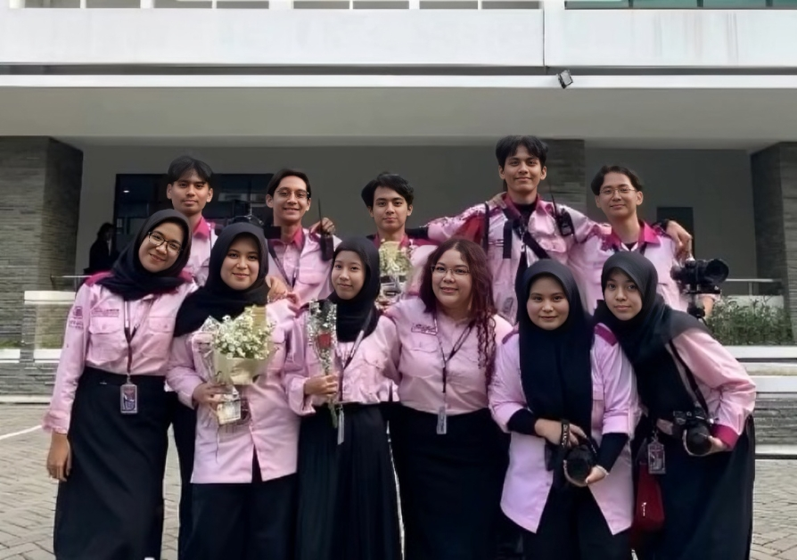
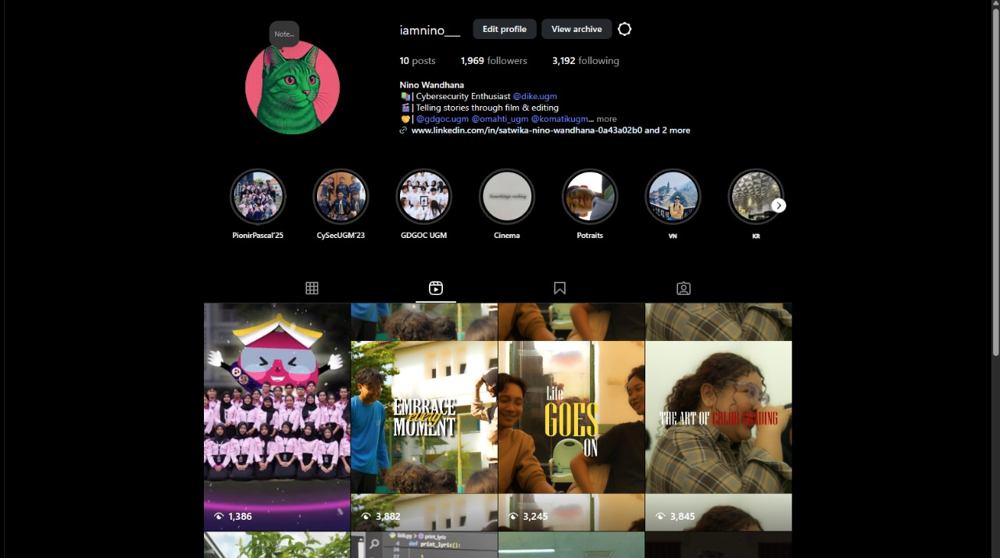

Welcome to my randomness of life experiences and adventures!
Pionir Pascal 2025

Pionir Pascal 2025, the biggest orientation event in our faculty, welcomed over 800 new students with the support of more than 100 dedicated committee members. For two days, the program created an atmosphere of excitement and unity, serving as the first step for freshmen to connect with their peers and the campus environment.
As Head of Documentation, I was responsible for capturing every moment, from the lively registration to the closing ceremony. It was a challenging yet rewarding task to coordinate the team and keep up with the fast pace of the event. Despite the exhaustion, seeing the final results that reflected the spirit of both students and committee members made the experience truly unforgettable.
Google Developer Group on Campus UGM
As part of the Activation Team at Google Developer Groups on Campus (GDGDoC), I was responsible for bringing events to life by coordinating activities, ensuring smooth execution, and creating engaging experiences for participants. This role allowed me to contribute directly to the success of each program while sharpening my organizational and teamwork skills.
Videos I created

Cinematography has been a passion of mine for years, starting as a simple hobby and gradually becoming an important part of how I express creativity. I enjoy capturing stories, emotions, and perspectives through the lens, whether it’s filming events, creating short narratives, or experimenting with visual styles. While it began as something I did in my free time, I hope to one day turn this passion into a professional career, where I can dedicate myself fully to the art of visual storytelling.